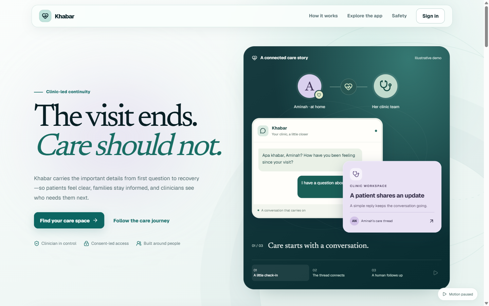
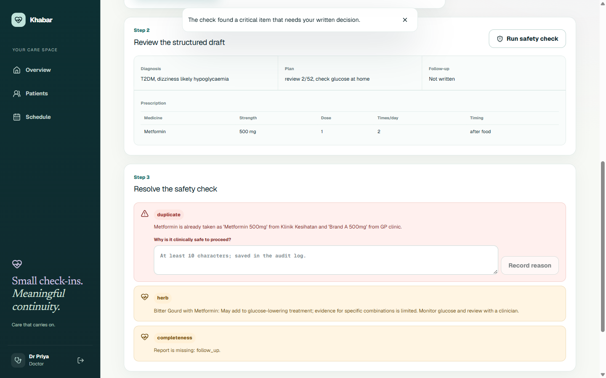

Remember the plan
Medicines, timing, and warning signs matter after the appointment.
Clinic-led continuity
A follow-up prototype for clearer care plans and organized clinic review.
Practice build · Not for clinical use

Illustrative demoA problem hypothesis
Medicines, instructions, and warning signs still need attention after a patient leaves the clinic.
Medicines, timing, and warning signs matter after the appointment.
Medicines and remedies may come from more than one place.
A clinic needs an owned process for following up on replies.
Design assumption · Not a finding from a completed patient study
One clinician-led loop
Patient shares visit context and current medicines.
Khabar prepares a draft and flags items for review.
Clinician resolves findings and approves the plan.
Patient sees a plain-language summary; replies needing review enter a clinic queue.

Designed to make limits visible
Critical findings block finalization until resolved or explicitly overridden with a reason.
Role and consent rules scope record access; identity is removed before agent processing.
Patient summaries use clinician-approved data and fixed templates.
Replies needing review receive fixed precautionary 999 wording.
Measured limit: word lists scored 22/22 on tuned examples and 2/12 on held-out replies. This is not a reliable emergency screen; staff alerting is not implemented.
Software evidence
Architecture: API owns records and access; agents receive de-identified task context.
Recovery rehearsal: disposable PostgreSQL restore returned data to the pre-backup point.
Hosted CI runs the optional PostgreSQL smoke separately. See test results.
Evidence still needed
Deploy and rehearse the current branch; the public agent health route still returns 404.
Verify real sign-in, role boundaries, and caregiver revocation.
Test provider integrations and obtain qualified clinical and pharmacy review.
Check accessibility and patient understanding with representative people.
Define and test a clinic-owned notification and escalation process.
Rehearse failure fallbacks and confirm hosting is stable enough for a live demo.
The next step is validation
Make the approved plan easier to follow—and prove it with the people it is meant to support.